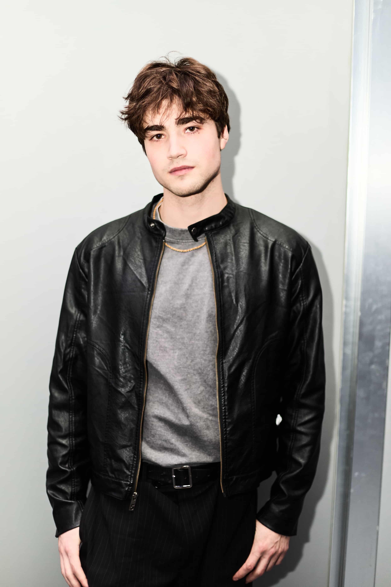
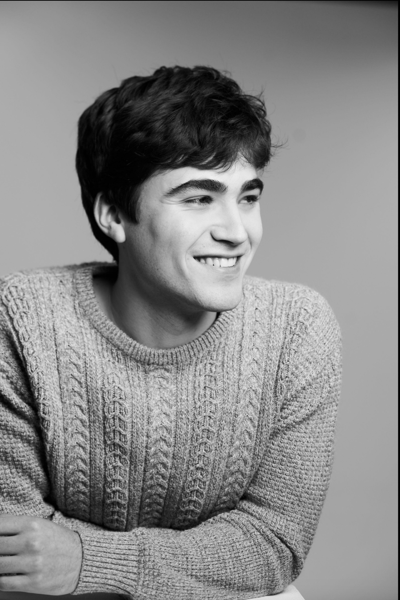
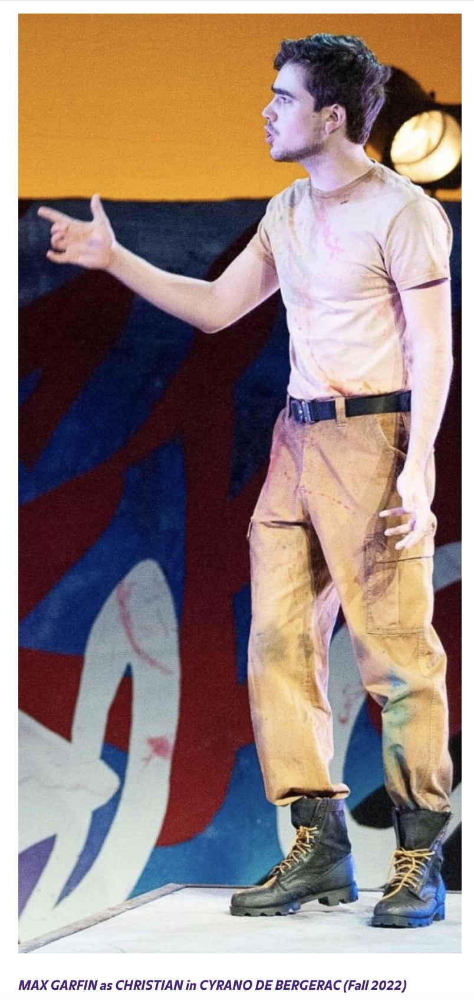
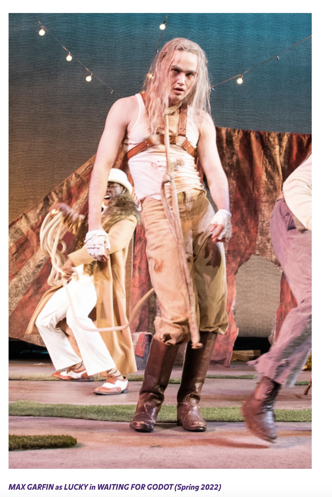
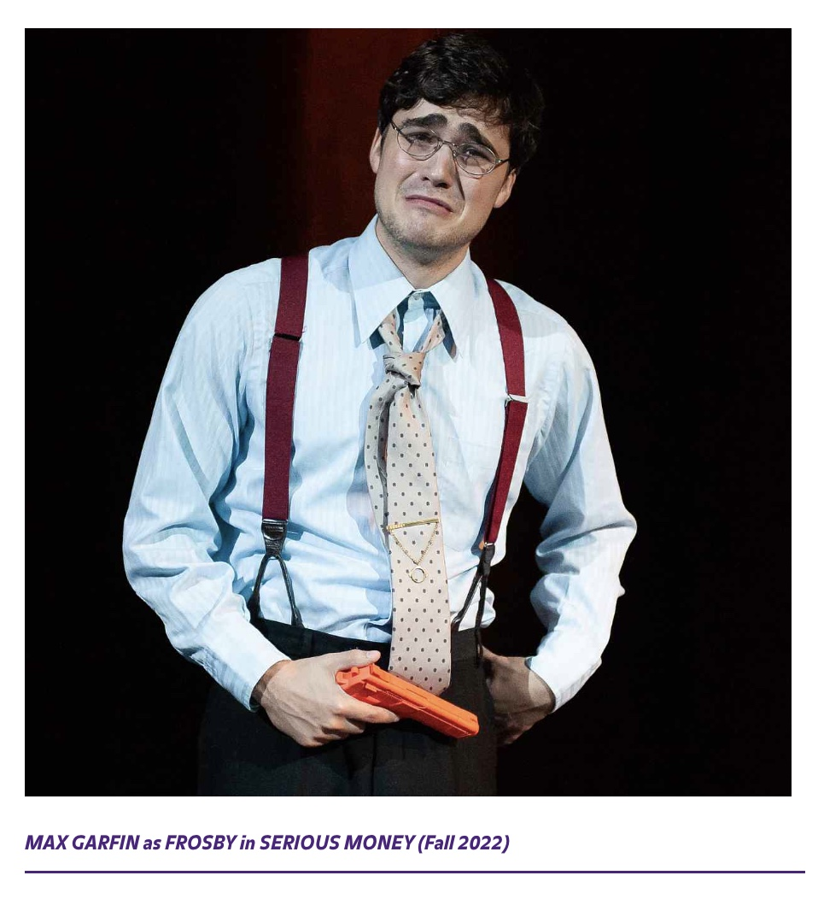

Max Garfin
Max Garfin is an American actor born and raised in Manhattan, New York. A proud alumnus of SUNY Purchase BFA Acting and LaGuardia High School's Drama Program, Max has built an impressive career spanning film and television. He is also the founder of Day Of Productions, a New York-based production company.


Career
Film Acting — Dramatic and versatile performances in feature films.
Television — Performances across series and streaming platforms.
Production — Founder of Day Of Productions.
Character Work — Transformative roles across genres.
Selected Works




Let's Create Something Extraordinary
For booking inquiries, production opportunities, or collaboration ideas, contact: maxgarfin@gmail.com
social media @maxgarfin